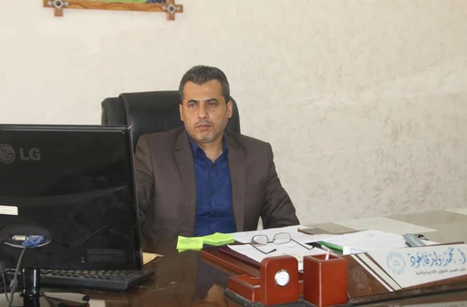

الرؤية:
بلوغ درجة متقدمة من الجودة والتميز في تقديم الخدمات لجميع دوائر الكلية لتحقيق مكانة مرموقة تليق بالكلية.
الرسالة:
استمرار عملية التحديث والتطوير والمحافظة على مستوى مقمز ورفيع في تقديم الخدمات ومتابعة أعمال شؤون الموظفين
والمتعاقدين، الشؤون المالية، الاتصالات الإدارية، المخازن والمشتربات.
الخدمات المعاونة، والاستغلال الأمثال للموارد المتاحة حتى نضمن تحقيق أهداف الكلية كتعليم تقني مقمز وإبداعي
بابي
احتياجات سوق العمل المتخصصة وساهم بعملية التنمية المستدامة.
مهام الشؤون الإدارية والمالية:
تشرف الشؤون الإدارية والمالية على مجموعة من الدوائر هي: شؤون الموظفين - المالية - المشتربات واللوازم - المكتب الهندسي - الخدمات - الأمن ويقوم مساعد العميد للشؤون الإدارية والمالية بالعديد من المهام منها:
- الإشراف على إدارة حسابات الكلية وعلى تنفيذ جميع العقود والاتفاقيات بين الكلية. وصفاتها وإعداد التقارير الإدارية والمالية الدورية والموازنة ومراقبة تنفيذ بنودها وإعداد البيانات المالية الخاصة في نهاية كل سنة مالية وتقديمها إلى مدقق حسابات الكلية.
- الإشراف على إدارة شؤون جميع الموظفين "باستثناء أعضاء الهيئة التدريسية" وفقاً لأنظمة واللوائح المعمول بها في الكلية، وانخاذ ما يلزم من إجراءات لضمان حسن سير العمل في الكلية.
- الإشراف على شؤون المكتبة.
- الإشراف على شراء اللوازم وتسجيلها ومراقبتها وتذرينها وتوزيعها على مرافق الكلية.
- الإشراف على صيانة مباني الكلية.
- الإشراف على الخدمات العامة لأعضاء هيئة التدريس والموظفين والطلبة.
- تقديم تقارير فصلية عن سير عمله لعميد الكلية.
أهداف الشؤون الإدارية والمالية:
- المحافظة على مقدرات الكلية.
- تنفيذ المهام ذات العلاقة بالشؤون الإدارية والمالية.
- إعداد مرافق الكلية للاستعمال الأفضل.
- الإشراف على موظفي الإدارات التابعة ومتابعة تنفيذ كافة أعمالها.
- وضع الخطط أنشطة الإدارة العامة بما يتفق مع الأهداف والسياسات العامة للكلية ومتابعة تنفيذها توفير الجو المناسب للعملية التعليمية.
- تطبيق القوانين والأنظمة واللوائح والتعليمات والقررات والأوامر المعمول بها.
- المتابعة والتنسبق مع كافة الجهات ذات العلاقة في الأمور المتعلقة بمصالح الإدارة ونطلق عملها.
- استغلال الموارد المتاحة للكلية بكفاءة وفاعلية.
- المشاركة في وضع وتنفيذ الاستراتيجية العامة للكلية.
- الإشراف على تحديد وتوفير احتياجات الكلية من الموارد البشرية وبالتنسيق مع الجهات المعنية.
- تنمية وتطوير العمل الإداري بالكلية وذلك لمواكبة التطورات التكنولوجية الحديثة.
- تنمية وتطوير الكادر الإداري بالكلية.